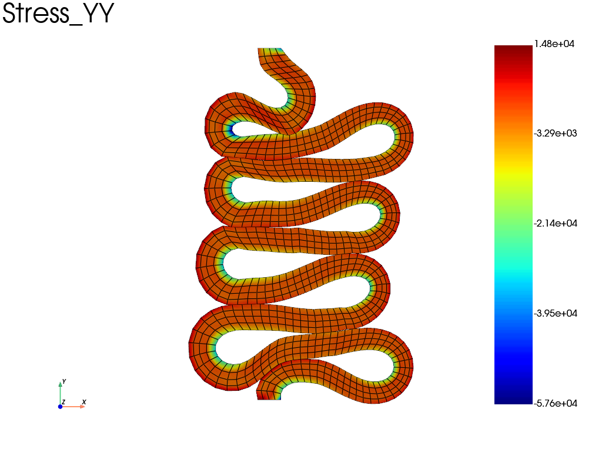
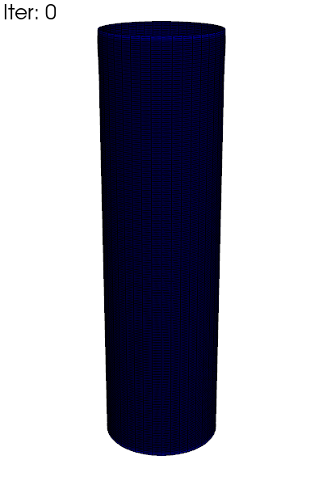
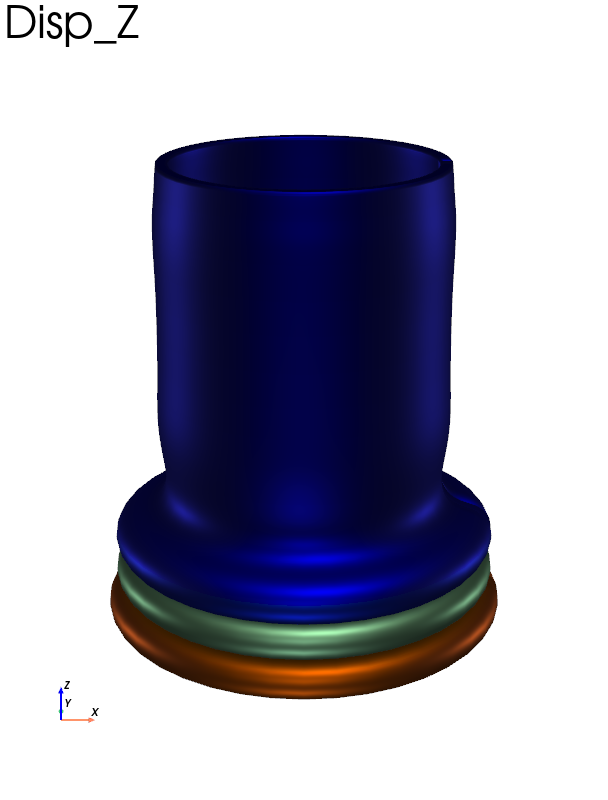

Note
Go to the end to download the full example code.
Compression of a tube using 2D axisymmetric model
This model uses self-contact, elasto-plastic material law with finite strain assumption in a 2D axisymetric modeling space. The full 3D result is ploted during the post processing phase.
# sphinx_gallery_thumbnail_number = 3
import fedoo as fd
import numpy as np
import pyvista as pv
import os
The tube in the 2D axisymmetric space is modeled by a rectangle.
fd.ModelingSpace("2Daxi") # 2D axisymmetric space
mesh = fd.mesh.rectangle_mesh(5, 240, 23, 25, 0, 180) # tube geometry
The elasto-plastic constitutive law “EPICP” from the Simcoon library is used. This law assume an isotropic hardening modeled with a power-law:
- where
\(\sigma\) is the equivalent stress defining the yield surface,
\(p\) is the equivalent plastic strain,
\(\sigma_y\) is the initial yield stress,
\(k\) is the strain hardening constant,
\(m\) is the strain hardening exponent.
sigma_y = 300 # Yield stress
k = 1000
m = 0.3
E = 200e3 # Elasticity modulus (for steel)
nu = 0.3 # Poisson ratio
props = np.array([E, nu, 1e-5, sigma_y, k, m])
material = fd.constitutivelaw.Simcoon("EPICP", props)
- We build two assemblies for:
the mechanical static equilibrium
the self contact
wf = fd.weakform.StressEquilibrium(material)
assembly = fd.Assembly.create(wf, mesh)
# Add self contact....
surf = fd.mesh.extract_surface(mesh)
contact = fd.constraint.contact.SelfContact(surf)
# contact parameters
contact.contact_search_once = True
contact.eps_n = 1e4 # contact penalty
contact.max_dist = 1.0 # max distance for the contact search
We define a non-linear problem including geometric nonlinearities using the Updated Lagrangian method (NLGEOM = ‘UL’), which is the default in fedoo (equivalent to NLGEOM = True).
The Line Search method is activated to improve the convergence of the Newton-Raphson algorithm. This necessitates increasing the maximum sub-iterations (max_subiter from 10 to 20) to allow for step-length optimization. Additionally, ‘adaptive_stiffness’ is enabled to stabilize convergence during sharp elastic-to-plastic transitions.
NLGEOM = "UL"
pb = fd.problem.NonLinear(assembly + contact, nlgeom=NLGEOM)
pb.set_nr_criterion(
"Displacement",
tol=1e-2,
max_subiter=20,
adaptive_stiffness=True,
)
# create a 'result' folder and set the desired ouputs
if not (os.path.isdir("results")):
os.mkdir("results")
res = pb.add_output(
"results/tube_compressoin", assembly, ["Disp", "Stress", "Strain", "P"]
)
# Node sets for boundary conditions
bottom = mesh.node_sets["bottom"]
top = mesh.node_sets["top"]
pb.bc.add("Dirichlet", bottom, "Disp", 0)
pb.bc.add("Dirichlet", top, "Disp", [0, -150])
pb.add_line_search()
pb.nlsolve(dt=0.01, tmax=1, update_dt=True, print_info=0, dt_min=1e-8)
Plot with pyvista
A simple 3D plot of the \(\sigma_{zz}\) field which coorespond to the \(\sigma_{\theta \theta}\) component since the axisymmetric model work in cylindrical coordinates.
res.plot("Stress", component="YY", data_type="Node")

Write an animated gif of the equivalent plasticity \(p\), with full 3D
reconstruction using fedoo.post_processing.axi_to_3d().
Note
The 3D reconstruction convert all fields to node_data. The fields are kept in the axisymmetric cylindrical coordinate system except for the ‘Disp’ field (displacement) that is converted to the 3D global coordinate system. For instance, the ‘XX’ component of ‘Stress’ is the radial stress whereas the ‘X’ component of displacement is the true 3d displacement along x.
clim = res.get_all_frame_lim("P")[2] # extract the min/max values
data_3d = fd.post_processing.axi_to_3d(res) # recontructed 3d data
pl = pv.Plotter(window_size=[400, 600], off_screen=True)
pl.open_gif("tube_compression.gif", fps=20)
for i in range(data_3d.n_iter):
data_3d.load(i)
pl.clear_actors()
data_3d.plot(
"P",
plotter=pl,
clim=clim,
title=f"Iter: {i}",
title_size=10,
azimuth=0,
elevation=-70,
show_scalar_bar=False,
show_edges=True,
)
pl.hide_axes()
pl.write_frame()
pl.close()
# We can also write a mp4 movie with:
# data_3d.write_movie('tube_compression', 'P')

An example of how to do a realistic plot using the vtk physical based renderic availbale through pyvista.
pl = pv.Plotter(window_size=[608, 800])
data_3d.load(62) # load iteration 62
data_3d.plot(
"Disp",
"Z",
show_edges=False,
pbr=True,
metallic=1,
roughness=0.5,
diffuse=1.0,
azimuth=0,
elevation=-70,
show_scalar_bar=False,
plotter=pl,
)
pl.show()

This example generate a realistic mp4 movie of the 3d deformation of the cylinder. It is commented because it is not possible to render the mp4 movie with sphinx-gallery.
# pl = pv.Plotter(window_size=[608, 800], off_screen=True)
# cubemap = pv.examples.download_sky_box_cube_map()
# pl.add_actor(cubemap.to_skybox())
# pl.set_environment_texture(cubemap)
# pl.open_movie("tube_compression.mp4", quality=6)
# for i in range(data_3d.n_iter):
# data_3d.load(i)
# data_3d.plot(
# show_edges=False,
# pbr=True,
# metallic=0.9,
# roughness=0.4,
# diffuse=0.8,
# azimuth=0,
# elevation=-70,
# color="orange",
# # clim=clim,
# show_scalar_bar=False,
# plotter=pl,
# name="mymesh",
# )
# pl.hide_axes()
# pl.write_frame()
# pl.remove_actor("mymesh")
# pl.close()
Total running time of the script: (2 minutes 22.138 seconds)